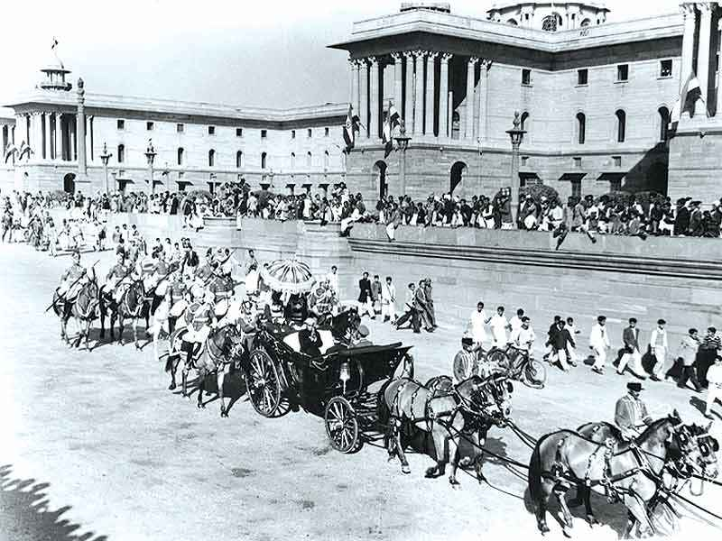

Republic Day (India)
Republic Day is a national holiday in India. It honours the date on which the Constitution of India came into effect on 26 January 1950 replacing the Governmentof India Act (1935) as the governing document of India and thus, turning thenation into a newly formed republic.

Preamble of the constitution of India
The Constitution of India came into force on 26 January 1950.
Obeserved by :- India,
Type :- National,
Significance :- Insecption of Constitution of India,
Celebrations :- Parades, distribution of sweets in schools, speeches and cultural dances,
Date :- 26 January,
Frequency :- Annual
The Constitution was adopted by the Indian Constituent Assembly on 26 November 1949 and came into effect on 26 January 1950 with a democratic government system, completing the country's transition towards becoming an independent republic. 26 January chosen as the date for Republic day because it was on this day in 1929 when the Declaration of Indian Independence (Purna Swaraj) was proclaimed by the Indian National Congress as opposed to the Dominion status offered by the British Regime.
Histroy of Republic Day
India achieved independence from British Raj on 15 August 1947 following the Indian independence movement. The independence came through the Indian Independence Act 1947, an Act of the Parliament of the United History of Republic Day Kingdom that partitioned British India intothe two new independent Dominions of the British Commonwealth (later Commonwealth of Nations).India obtained its independence on 15 August 1947 as a constitutional monarchy with George VI as head of state and the Earl Mountbatten as governor-general. The country, though, did not yet have apermanent constitution; instead its laws were based on the modified colonial Government of India Act 1935. On 29 August 1947, a resolution was moved for the appointment of Drafting Committee, which was appointed to draft a permanent constitution, with Dr B R Ambedkar aschairman. While India's Independence Daycelebrates its freedom from British Rule,the Republic Day celebrates the coming into force of its constitution. A draft constitution was prepared by the committee and submitted to the Constituent Assembly on 4 November 1947.The Assembly met, in sessions open to public, for 166 days, spread over aperiod of two years, 11 months and 18 days before adopting the Constitution.After many deliberations and some modifications, the 308 members of the Assembly signed two hand-written copiesof the document (one each in Hindi and English) on 24 January 1950. Two days later which was on 26 January 1950, it came into effect throughout the who lenation. On that day, Dr. Rajendra Prasad's began his first term of office as President of the Indian Union. The Constituent Assembly became the Parliament of India under the transitional provisions of the new Constitution.
Celebrations

President Rajendra Prasad (in the horse-drawn carriage) readies to take part in the first Republic Day The main Republic Day celebration is held in the national capital, New Delhi, at the Rajpath before the President of India. On this day, ceremonious parades take place at the Rajpath, which are performed as a tribute to India; its unity in diversity and rich cultural heritage.
1. Delhi Republic Day parade
The Delhi Republic Day parade is held in the capital, New Delhi and is organised by the Ministry of Defence. Commencing from the gates of the Rashtrapati Bhavan (the parade on Rajpath, New Delhi, in 1950. President's residence), Raisina Hill on Rajpath past the India Gate, this event is the main attraction of India's Republic Day Celebrations and lasts for three days. The parade showcases India's Defence Capability, Cultural and Social Heritage. Nine to twelve different regiments of the Indian Army in addition to the Navy, and Air Force with their bands march past in all their finery and official decorations. The President of India who is the Commanderin-Chief of the Indian Armed Forces, takes the salute. Twelve contingents of various para-military forces of India and police forces also take part in this parade.
2. Beating Retreat
The Beating Retreat ceremony is held after officially denoting the end of Republic Day festivities. It is conducted on the evening of 29 January, the third day after the Republic Day. It is performed by the bands of the three wings of the military, the Indian Army, Indian Navy and Indian Air Force. The venue is Raisina Hill and an adjacent square, Vijay Chowk, flanked by the North and South block of the Rashtrapati Bhavan (President's Palace) towards the end of Rajpath. The Chief Guest of the function is the President of India who arrives escorted by the (PBG), a cavalry unit. When the President arrives, the PBG commander asks the unit to give the National Salute, which is followed by the playing of the Indian National Anthem, Jana Gana Mana, by the Army. The Army develops the ceremony of display by the massed bands in which Military Bands, Pipe and Drum Bands, Buglers and Trumpeters from various Army Regiments besides bands from the Navy and Air Force take part which play popular tunes like Abide With Me, Mahatma Gandhi's favourite hymn, and Saare Jahan Se Achcha at the end.
3. Award distribution
On the eve of Republic Day, the Presidentof India distributes Padma Awards to the civilians of India every year. These are the second highest civilian awards in India after Bharat Ratna. These awards are given in three categories, viz. Padma Vibhushan, Padma Bhushan and Padma Shri, in decreasing order of importance. Padma Vibhushan for "exceptional and distinguished service". Padma Vibhushan is the second-highest civilianaward in India.Padma Bhushan for "distinguished service of a high order". Padma Bhushan is the third-highest civilian award in India.Padma Shri for "distinguished service". Padma Shri is the fourth-highest civilian award in India. While being national honours, the Padma awards do not include cash allowances, benefits, or special concessions in rail/air travel.Per a December 1995 judgment of the Supreme Court of India, no titles or honorifics are associated with the Bharat Ratna or any of the Padma awards; Honorees cannot use them or their initials as suffixes, prefixes or pre- and postnominals attached to the awardee's name. This includes any such use on letterheads, invitation cards, posters, books etc. In the case of any misuse, the awardee will forfeit the award, and he or she will be cautioned against any such misuse upon receiving the honour. The decoration comprises a sanad(Certificate) issued under the hand and seal of the President and a Medallion. The recipients are also given a replica of the medallion, which they can wear during any ceremonial/State functions etc., if they desire. A commemorative brochure giving out brief details in respect of each award winner is also released on the day of the investiture ceremony.
Gallery
The Flag of India on Republic Day
Buildings on Raisina Hill including
Rashtrapati Bhavan, lit up during Republic
Day 2008.
Surya Kiran Aerobatics Team displaying
tricolor.
Border Security Force personnel on
Republic Day.